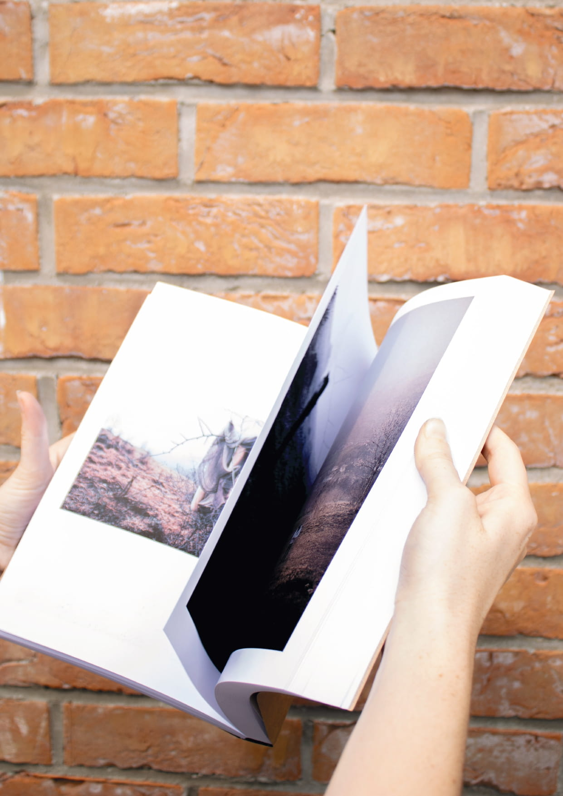
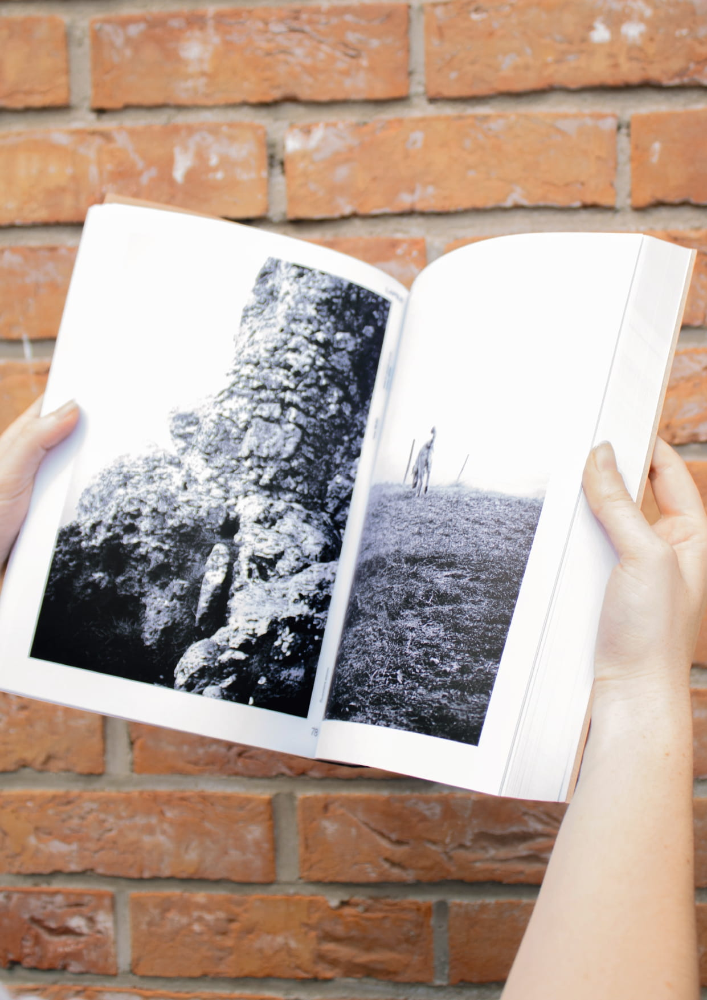
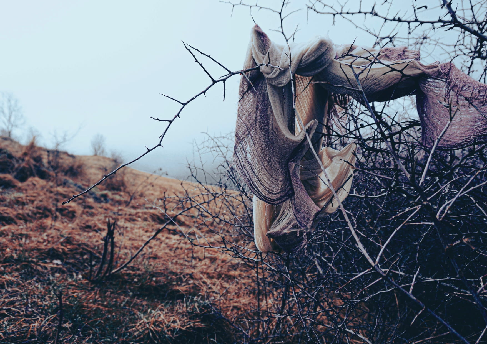
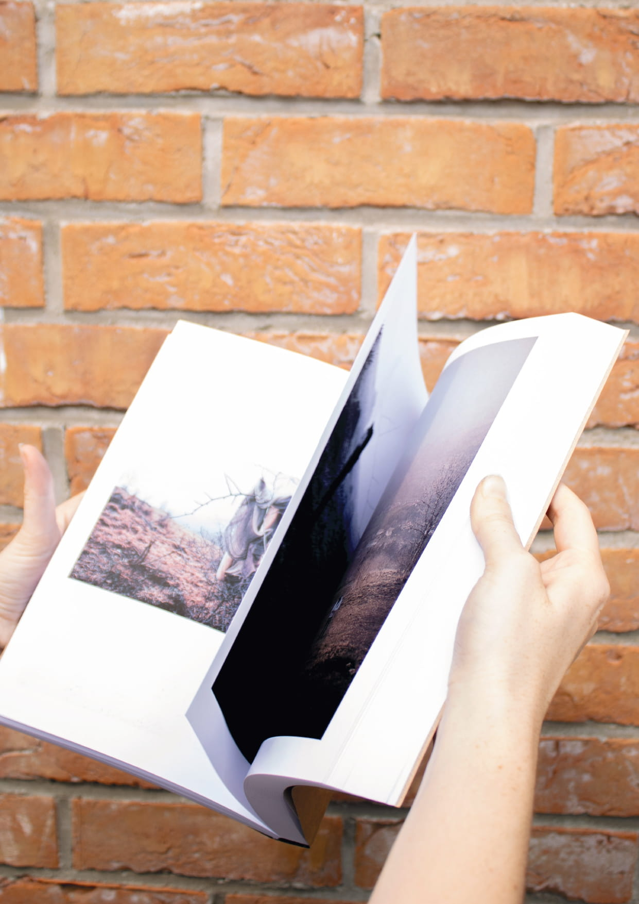
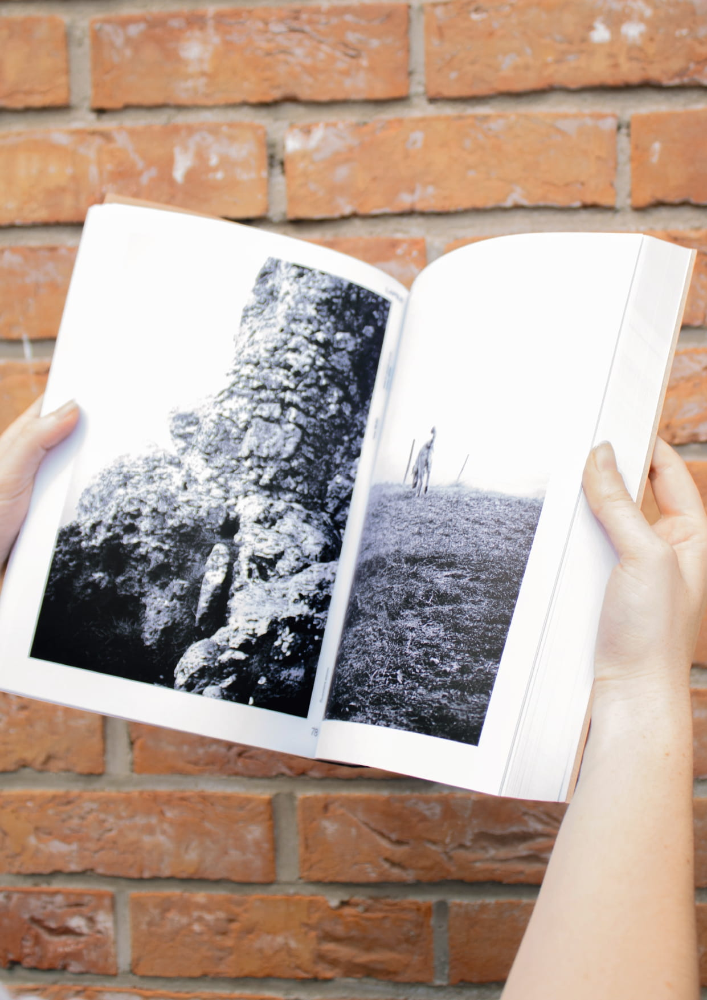
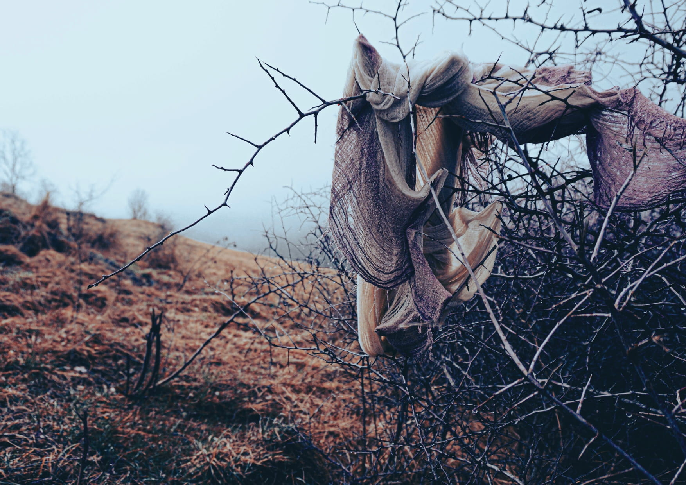

Palimpseste
PALIMPSESTE
Travail d’édition photographique conçu comme une anthologie personnelle de mes
images produites entre 2023 et 2025. Ce projet rassemble et recompose un ensemble
de photographies issues de périodes, de contextes et d’états intérieurs différents,
réunies au sein d’un ouvrage de 300 pages.
« La photographie ne dit pas ce qui est, mais ce qui a été »
Ce recueil interroge la mémoire et le besoin de conserver une trace de ce que j’ai
pu vivre, observer, ressentir ou créer. Les images s’y superposent comme des couches
fines, des souvenirs qui s’accumulent sans jamais totalement s’effacer.
Palimpseste se construit comme un espace intime, où chaque photographie devient
une tentative de fixer un trouble, de rendre visible ce qui glisse, ce qui persiste,
ce qui se transforme avec le temps.
L’édition est structurée en dix catégories
photographiques, pensées comme autant
de portes d’entrée dans cette matière
mouvante. Certaines accueillent une série
unique, dense et resserrée.
D’autres rassemblent plusieurs fragments
qui dialoguent entre eux, formant un
ensemble éclaté mais cohérent.
2025
 




